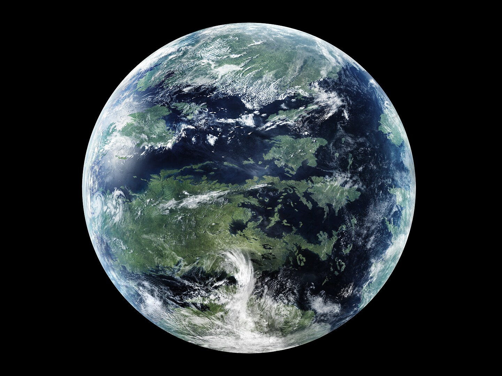
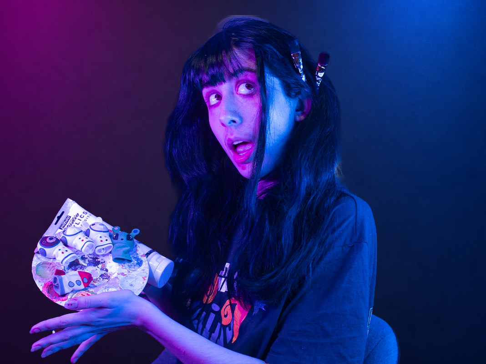
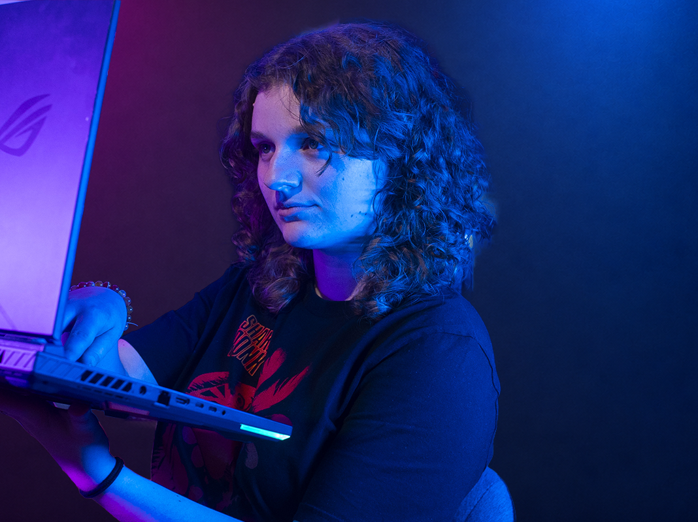
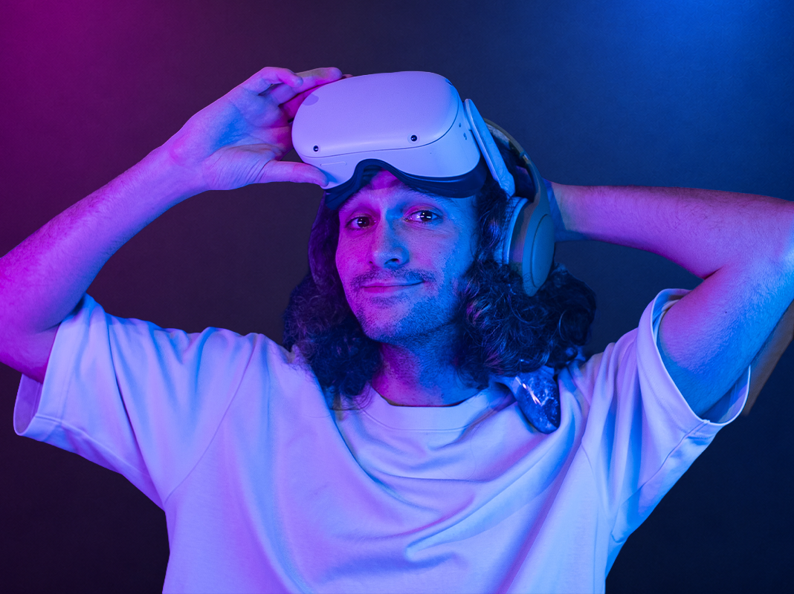
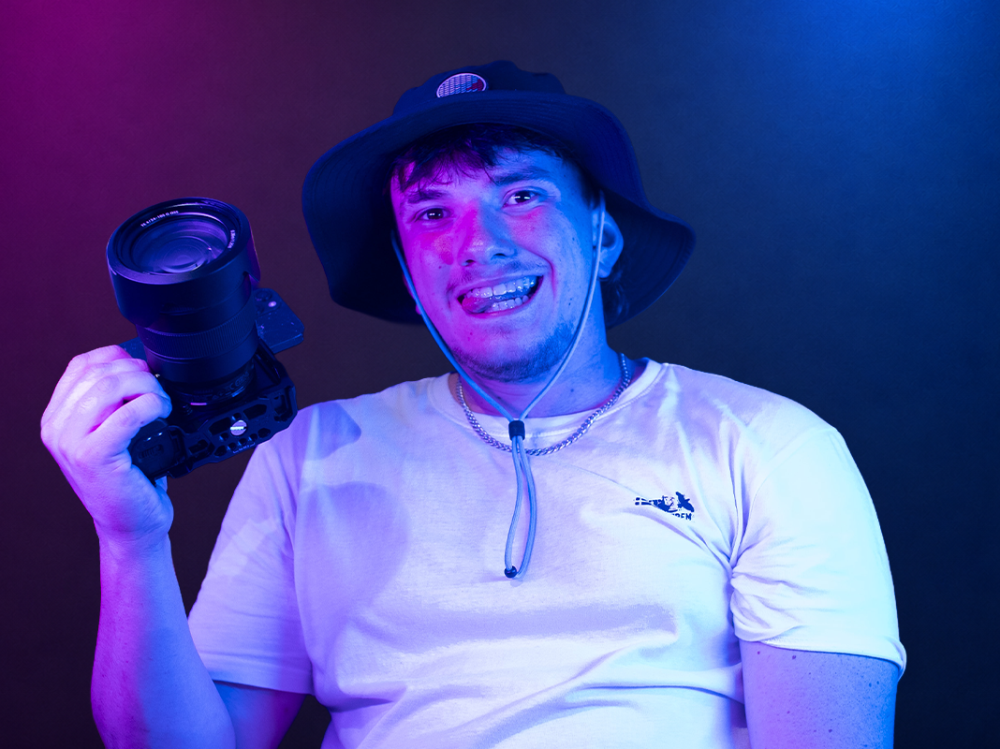

Créative, sensible et toujours un peu inquiète et c'est précisément ce qui fait sa force. Apolline est l'âme artistique de la cellule. Son souci sincère pour l'équipage de l'Odyssey IV nourrit chaque création : elle transforme une donnée scientifique froide en quelque chose qui touche, qui émeut, qui donne envie de regarder les étoiles.

Lila, c'est l'optimisme à l'état pur. Engagée pour la planète, passionnée de 3D, elle a forgé son talent auprès d'un certain Marin, expert dont le nom s'est perdu mais dont l'héritage est bien vivant dans chacune de ses créations. Elle croit que cette mission peut changer notre rapport au monde et elle met tout son talent pour que vous le croyiez aussi.

Geek assumé et cuisinier de l'équipe, Nicolas est celui qui fait tourner la machine dans l'ombre. Il gère le site, le code, et s'occupe du confort de chacun des membres de l'équipe, tout en maniant le web d'une main de maitre.

Robin est le mordu de vidéo. Il passe son temps une caméra à la main, un ordinateur dans l'autre, et produit des images et des vidéos d'une qualité exceptionnelle, capables de faire ressentir des émotions à chaque image. Il est l'expert technique de l'agence Mass Truitass Effect.